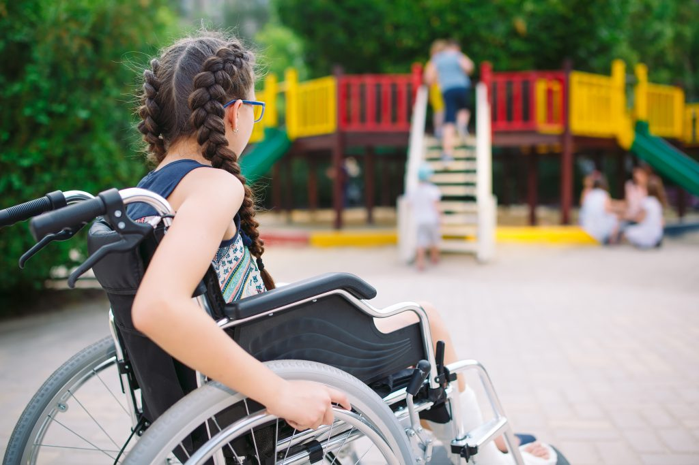

Exclusión social
En cuanto a la exclusión social como categoría de análisis ha sido definida y redefinida desde los últimos cuarenta años. Su uso corriente se popularizó en Europa en los primeros años de la década de 1970 específicamente en Francia. En regiones como Latinoamérica ya se utilizaba para finales de la década de 1960 la concepción de “masa marginal” 3 para definir ciertos grupos que quedaban excluidos de todo el crecimiento económico propio de un periodo de bonanza en esos años de posguerra.
Después de la segunda guerra mundial, el paradigma de la modernización se convirtió en uno de los puntos de referencia centrales del pensamiento social latinoamericano. Este paradigma explica el cambio de las sociedades avanzadas modernas, después de la segunda guerra mundial y su evolución, económica, social y política.
Desde la sociopolítica latinoamericana, el tema de la marginalidad, en donde las primeras definiciones señalaban que: “al comienzo se llamó marginales a los asentamientos urbanos periférico” (Villas miseria, callampas, favelas, rancheríos, etc.) que proliferaron a partir de la segunda posguerra. Los referentes ecológicos eran bastante claros: designaban viviendas situadas al borde de las ciudades y carentes de ciertos requisitos mínimos de habitabilidad” (Num,2003:19).
Esto se llevo a cabo utilizando el pensamiento marxista del ejercito industrial
Es pertinente señalar que para Marx el ejército industrial de reserva dentro de su teoría tiene unos efectos funcionales para el capitalismo; este era utilizado para definir o hacer referencia “al conjunto de la fuerza de trabajo que permanece fuera del mercado de trabajo y que sirve para cubrir las necesidades de más trabajo en las fases de expansión del capitalismo, al tiempo que mantiene el exceso de oferta de fuerza de trabajo que permite abaratar los salarios” (Giner, 2002: 232).
En cuanto al concepto propio de exclusión social este aparece como categoria de análisis en Europa, la aparición de la categoría de “exclusión social” como se plantea específicamente en Francia, a inicios de la década de 1970.
En este caso los excluidos era aquellos que carecían de seguridad social, las cuales no estaban insertas formalmente en los mercados de trabajo y no goza-ban de los beneficios que ofrecía el llamado estado de bienestar, así como también de la creciente inestabilidad de los vínculos sociales, tales como la solidaridad entre individuos y grupos.
Hay que tener en cuenta que al hablar de exclusión a esta categoría se manifiesta por medio de procesos sociales, los cuales van acompañados de una doble condición ciudadana, en donde los excluidos, ensu gran mayoría, se convierten en grupos de cierta homogeneidad y localización concreta, formando nuevas infraclases:“ es decir la exclusión es un proceso de segregación social, mientras que las infraclases, son grupos sociales o cuasi clases formadas por las victimas principales de dichos procesos de exclusión” (Tezanos, 2004:140)
